Examples
Line and two nodes
Suppose I want to create a line and two labels at the ends. The code below achieves this
from tikzpy import TikzPicture
tikz = TikzPicture()
line = tikz.line((0, 0), (1, 1), options="thick, blue, o-o")
start_node = tikz.node(line.start, options="below", text="Start!")
end_node = tikz.node(line.end, options="above", text="End!")

Saving the line as a variable line allows us to pass in line.start and line.end into the node positions, so we don't have to type out the exact coordinates.
This is because lines, nodes, etc. are class instances with useful attributes:
Circles
In this example, we use a for loop to draw a pattern of circles.
This example
demonstates how Pythons for loop is a lot less messier than the \foreach loop provided in Tikz via TeX. (It is also more powerful; for example, Tikz with TeX alone guesses your step size, and hence it cannot effectively loop over two different sequences at the same time).
import numpy as np
from tikzpy import TikzPicture
tikz = TikzPicture(center=True)
for i in np.linspace(0, 1, 30): # Grab 30 equidistant points in [0, 1]
point = (np.sin(2 * np.pi * i), np.cos(2 * np.pi * i))
# Create four circles of different radii with center located at point
tikz.circle(point, 2, "ProcessBlue")
tikz.circle(point, 2.2, "ForestGreen")
tikz.circle(point, 2.4, "red") # xcolor Red is very ugly
tikz.circle(point, 2.6, "Purple")
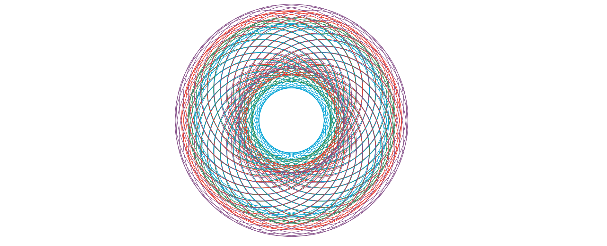
Roots of Unity
In this example, we draw the 13 roots of unity.
If we wanted to normally do this in TeX, we'd
probably have to spend 30 minutes reading some manual about how TeX handles basic math. With Python, we can just use the math library and make intuitive computations to quickly build a function that displays the nth roots of unity.
from math import pi, sin, cos
from tikzpy import TikzPicture
tikz = TikzPicture()
n = 13 # Let's see the 13 roots of unity
scale = 5
for i in range(n):
theta = (2 * pi * i) / n
x, y = scale * cos(theta), scale * sin(theta)
content = f"$e^{{ (2 \cdot \pi \cdot {i})/ {n} }}$"
# Draw line to nth root of unity
tikz.line((0, 0), (x, y), options="-o")
if 0 <= theta <= pi:
node_option = "above"
else:
node_option = "below"
# Label the nth root of unity
tikz.node((x, y), options=node_option, text=content)
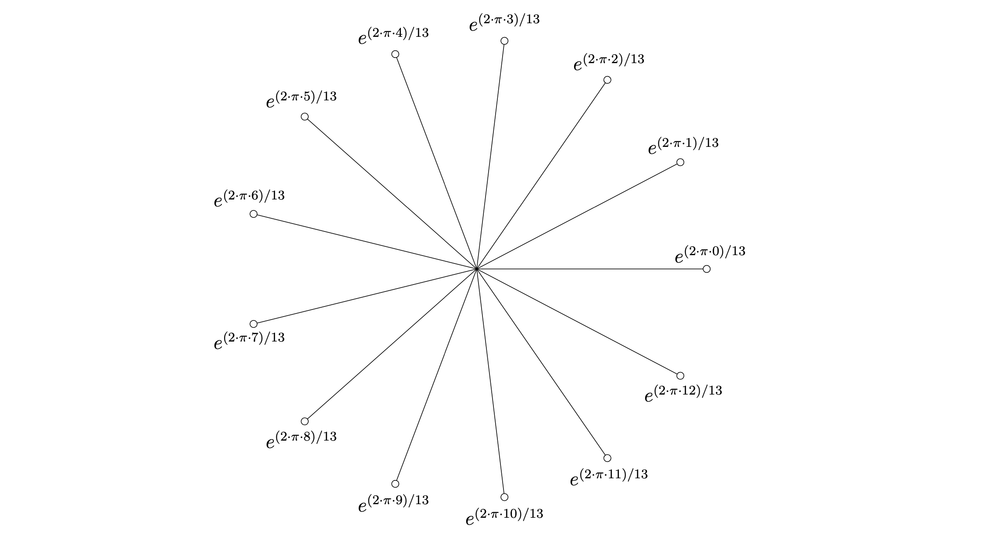
We will see in the examples that follow how imported Python libraries can alllow us to quickly (and efficiently, this is really important) make more sophisticated Tikz pictures.
DES
In the source here, we use a Python function to draw one round of the DES function. We then call this function multiple times to illustrate the multiple rounds that entail the DES encryption algorithm.
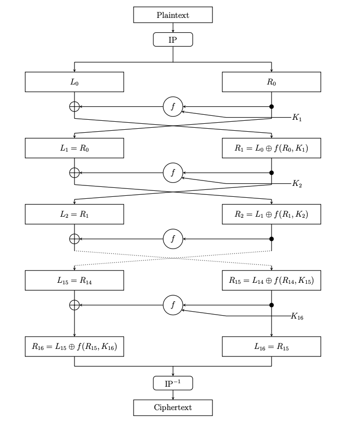
General Ven Diagrams
In the source here, we use the python library itertools.combinations to create a function which takes in an arbitrary number of 2D Tikz figures and colors each and every single intersection.
For example, suppose we arrange nine circles in a 3 x 3 grid. Plugging these nine circles in, we generate the image below.
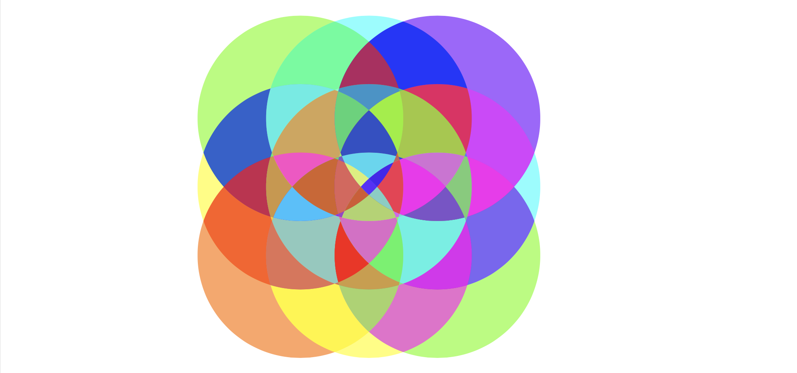
As another example, we can create three different overlapping topological blobs and then plug them into the function to obtain
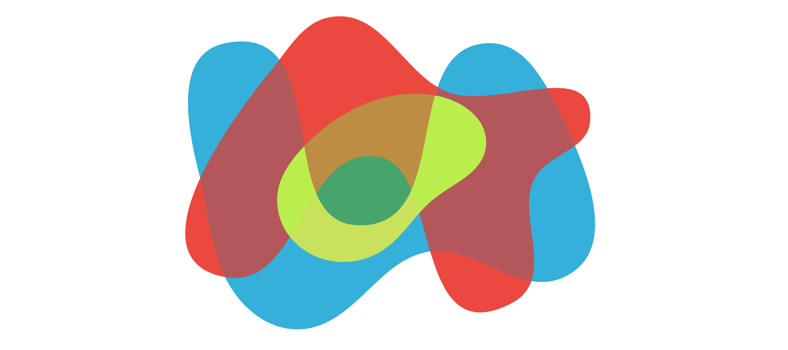
(Both examples are initialized in the source for testing.)
As one might guess, this function is useful for creating topological figures, as manually writing all of the \scope and \clip commands to create such images is pretty tedious.
Barycentric subdivision
In the source here, we create a function that allows us to generate the the n-th barycentric subdivision of a triangle.
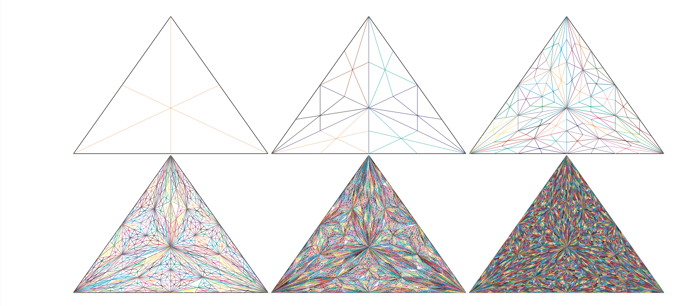
Cantor function
In the source here, we plot the Cantor function by performing recursion. It is clear from this TeX Stackexchange question that TeX alone cannot do this, as most answers rely on external programs to generate the data.
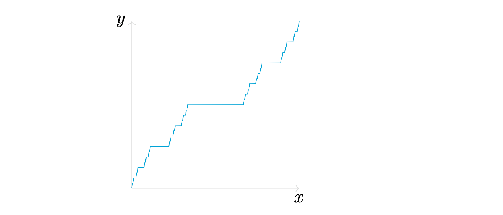
Symbolic Intergation
In the source here, we use numpy and sympy to very simply perform symbolic integration. The result is a function which plots and labels the n-order integrals of any function. For example, the output of x**2 (the polynomial x^2) generates the image below.
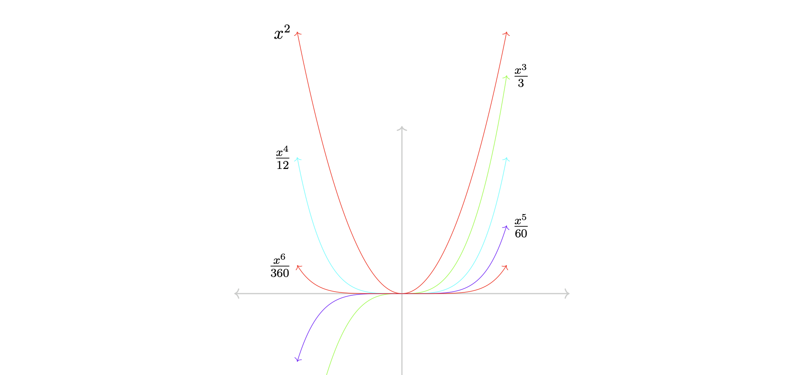
Cone over a Projective Variety
In the source here, we use numpy to create an image which illustrates the concept of an affine cone over a projective variety. In the case of a curve Y in P^2, the cone C(Y) is a surface in A^3.
The image that this drawing was modeled after appears in Exercise 2.10 of Hartshorne's Algebraic Geometry.
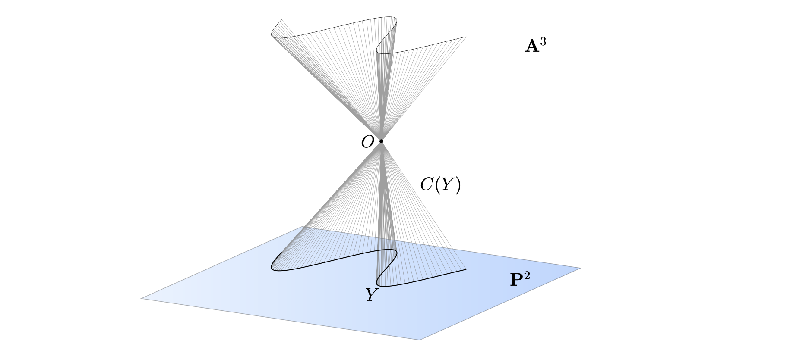
Lorenz System
In the source here, we use numpy and scipy to solve ODEs and plot the Lorenz system. This is made possible since tikz_py also supports 3D.
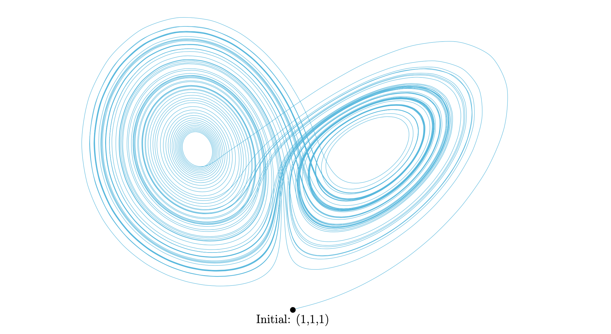
Tikz Styles
tikzpy supports the creation of any \tikzset, a feature of Tikz that saves users a great deal of time. You can save your tikz styles in a .py file instead of copying and pasting all the time.
Even if you don't want to make such settings, there are useful \tikzset styles that are preloaded in tikzpy. One particular is the very popular tikzset authored by Paul Gaborit in this TeX stackexchange question. Using such settings, we create these pictures, which illustrate Cauchy's Residue Theorem.
The source here produces
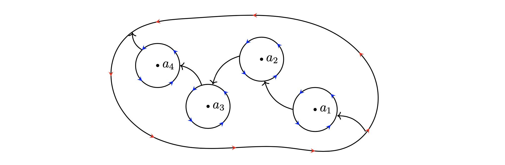
while the source here produces
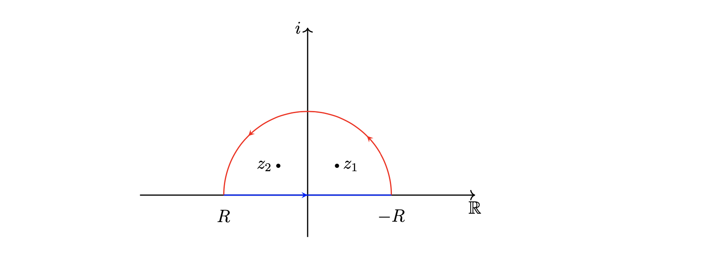
Linear Transformations
Recall a 3x2 matrix is a linear transformation from R^2 to R^3. Using such an interpretation, we create a function in the source here which plots the image of a 3x2 matrix. The input is in the form of a numpy.array.
For example, plugging the array np.array([[0, 1], [1, 1], [0, 1]]) into the source produces
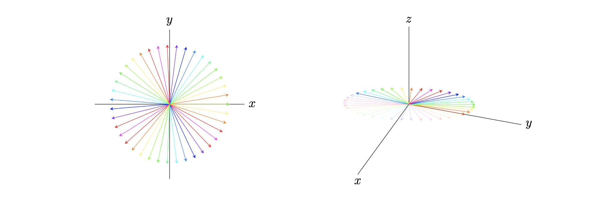
while plugging the array np.array([[2, 0], [1, 1], [1, 1]]) into the source produces
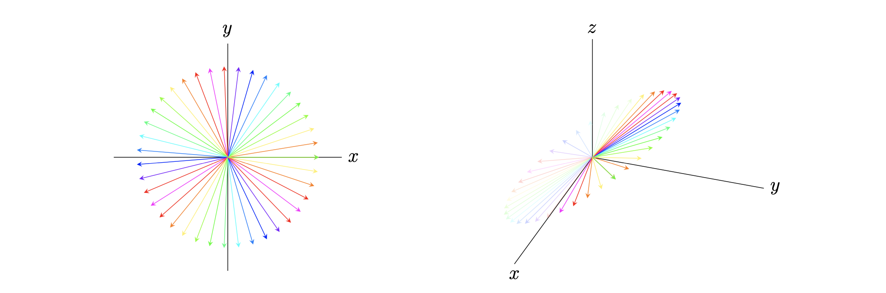
Projecting R^1 onto S^1
In the source here, we use numpy to illustrate the projection of R^1 onto S^1. Creating this figure in Tex alone is nontrivial, as one must create white space at self intersections to illustrate crossovers. Existing tikz solutions cannot take care of this, but the flexible logical operators of Python allow one to achieve it.
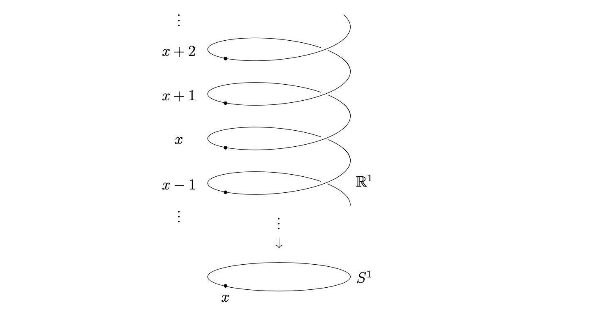
Polar Coordinates
In the source here, we illustrate the concept of polar coordiantes by demonstrating how a sine curve is mapped into polar coordinates. This example should be compared to the more complex answers in this TeX Stackexchange question which seeks a similar result.
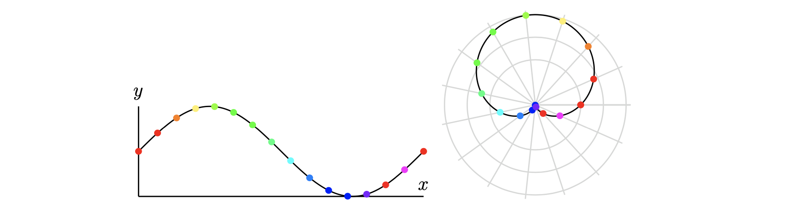
Blowup at a point
In the source here, we illustrate the blowup of a point, a construction in algebraic geometry. This picture was created in 5 minutes and in half the lines of code compared to this popular TeX stackexchange answer, which uses quite convoluted, C-like Asymptote code.
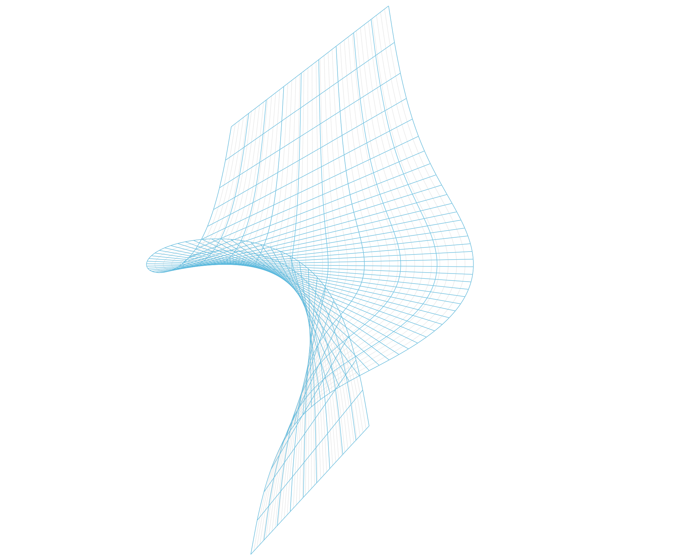